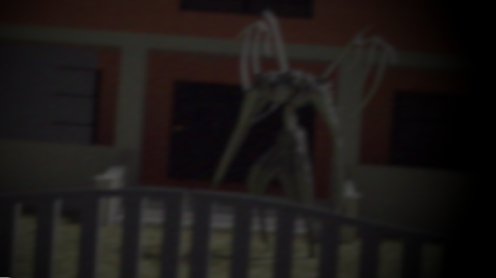

Where Did The Mountain Creatures "Zahrek" Come From?
What was supposed to be a normal trip back home turned into a horrifying sight for 39-year old Sushil KC. He reported the chilling encounter late Tuesday night after returning home to find what he described as “one of them” running frantically and "withering away" in his front yard until he had saw it. The description of the creature perfectly matches the recent influx in the pervasive invasion of the "Zahrek" in urban areas: the decaying snow-covered 7ft tall body with 2 large wings of just bones and its spine exposed running frantically almost like it is trying to get attention from somebody. KC passed out from this encounter, but it is safe to say he will remember his encounter with this Zahrek.
KC is certainly fortunate to have seen the creature this early in its decay. Generally, Zahrek do not typically attack us humans. Other reports have stated that the more frantic Zahrek are certainly more hostile with a lot less body. There have also been reports of these monsters ditching their body completely and entering into a human body when they sleep almost like a tapeworm and living in their mind like a parasite. They will then live as the person and make every future decision related to the well-being of the Zahrek. Why is this? Well, a team of scientists called the "Zahrek-Origin Corp" (ZOC) has been working on the case for a while.

The name of the monster is Zahrek, a humanoid parasite monster that is born from the mountains such as the Himalyays but resides in cities if not dealt with. The only known way to deal with them is to trap them and have no person remember them. The monster needs to be looked at or remembered by at least one person all the time, otherwise it decays into dust progressively. Essentially, if it is not remembered it will die.
They do not really hurt people, but they want to be remembered because the pain of being forgotten is not like anything else because it is physical. They are created from the negative energy and pain of people who die alone. That is why so many of them come from the mountains. When they are created, they are full but they immediately start turning into dust. They shriek like crazy and they run off the mountain through avalanches and blizzards to have someone look at them. That is why they run into the cities and run directly at people. These Zahrek have useless wings that serve no purpose. Instead, they have extremely powerful legs which allow them to run extremely fast and leap and bound.
Now, why is it classified as a parasite? Some of the really desperate Zahrek when they are nearly all dust can abandon their skeletons and move into a person while they sleep. They enter through the nose and then they make their way into the mind and live in the hippocampus for the rest of the person’s life. The parasite makes sure every decision from then on involves the rememberance of them. When the host dies, the Zahrek absorbs their skeleton structure and their flesh, becoming whole again and then the cycle restarts again as they require more attention.
If you ever encounter a Zahrek or any monster, do not appraoch it and try not to communicate with them. Although most of them have shown to not harm humans, most of their behavioral patterns are still shrouded in mystery and are being actively studied by the ZOC. One resident that encountered Zahrek said "It wasn't there to attack me. It felt like it was just there to watch. And honestly... that's worse."
Anyone with information about similar sightings is encouraged to submit a report through the Cryptid Chronicle tip line. Stay safe out there.